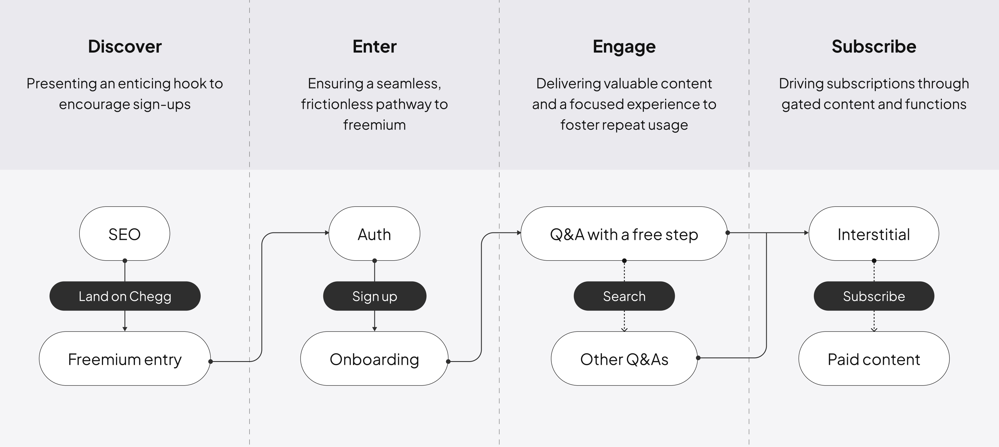

Freemium
UX Design · 2024
With the rise of free generative AI tools, Chegg experienced a decline in the conversion rate for its paid homework help services. To drive subscription acquisition and increase engagement of users with free accounts, I designed Chegg’s first freemium experience.
My role
Sole UX designer & UX researcher
Contribution highlights
- Designed the end-to-end freemium user flow
- Created motion graphics for onboarding
- Conducted UX research
- Developed strategies for business models
Duration
8 weeks
Team
UX designer (Me), UX content designer, Product manager, Engineers, Product marketing managers, Data analyst
Tools
Figma, FigJam, UserTesting.com, Amplitude
Challenge
Chegg’s conversion rate has gone down significantly in 2024
With the rise of free generative AI tools, Chegg experienced a decline in the conversion rate for its paid homework help services. Currently, Chegg’s core product - homework Q&A - doesn’t provide any content for free, leaving non subscribers no way to try out the product outside of the paywall. There is a big appetite to build the first and ever freemium experience to give non-subscribers a taste of Chegg’s content quality.
Objective
How can we build a freemium experience that drives members’ engagement and conversion?
Through discussions with the PM and UX content designer, we defined the project goals and success metrics. The primary focus was to driving repeat usage of freemium as a first step, followed by improving the conversion rate.
Ideation
Free step-reveal as the first freemium experiment
I planned and facilitated a brainstorming session with approximately 10 cross-functional stakeholders, ensuring diverse perspectives and the right mix of participants. Using activities like Crazy 8s and Storyboarding, we identified and prioritized four ideas deemed the most impactful and least likely to cannibalize existing subscriptions.
To evaluate whether each option provided sufficient value to drive repeated use of the freemium offering, I conducted user research. The findings showed that the first three options were highly valuable to students. We chose Free Step-Reveal as the initial freemium experiment, prioritizing it for its low level of effort, which would allow us to get some quick signals.


User flow
Thinking through the end-to-end flow
I began by mapping out the current user journey and analyzing traffic at each step. Once I gained a deeper understanding, I designed the freemium user flow at a high level. Most of Chegg's traffic comes from SEO. Once a visitor lands on the site, they are prompted to sign up to unlock the first step for free. In the existing acquisition flow, users were directed to the interstitial page for subscription. I intentionally moved the interstitial to a later stage in the flow to streamline the onboarding process to freemium.
Design iteration
Ensuring discoverability of freemium entry
One challenge was ensuring the discoverability of the freemium entry point. Initially, we started with a version where I reused the design from the current acquisition flow, making only minor copy adjustments for freemium. However, I discovered that many visitors return to Chegg multiple times before signing up. For these returning visitors, the freemium entry was easy to overlook because it resembled the existing acquisition flow. Eventually, we landed on the version where I added an eye-catching illustration. Drawing insights from previous experiments, we incorporated the words “free” and “join now,” which had proven effective in boosting CVR and CTR, into the messaging.

Design iteration
Nudge, don't push
The design of the freemium content page sparked extensive debate. We deliberately limited upselling in this experience to allow freemium members to focus on the content. However, some stakeholders raised concerns that this approach might reduce conversion rates (CVR). Additionally, since not all solution types supported free steps, we needed to manage expectations by mentioning these constraints in the onboarding messaging—further amplifying concerns about potential CVR impact.
An early version of the freemium content page that raised concerns about conversion rate
Acknowledging the feedback, I brought it to my team. While we agreed on maintaining a transparent and focused experience, I explored ways to incorporate the feedback and strike a balance by subtly nudging users to subscribe. After discussions, we made three changes:
- Positive Onboarding Messaging: I dug into data on Amplitude and found that traffic to solution types not supporting free step-reveal was lower than anticipated. This insight allowed us to tweak the messaging tone to be more optimistic.
- Transparent communication at the right moment: We ensured that the constraints were clearly communicated when users landed on unsupported solutions.
- Subtle Upselling: Instead of overtly promoting subscriptions, we highlighted the gated "Send to Expert" feature to demonstrate value and added similar Q&As to showcase Chegg’s extensive library.
Final version that incorporates stakeholders' feedback
Design iteration
Creating enticing onboarding through animations
Since the early version of the onboarding felt too low-key, I utilized animations to make the experience more enticing, which I believed would help users better appreciate the freemium offering. In the initial version, when users dismissed the onboarding modal, an animation with confetti played as the first step expanded. While the confetti added excitement, it felt cliché and random.
Based on feedback from my UX team, I iterated and designed a new unlocking animation, where users would wait briefly for the first step to unlock. This approach was intended to make users attach more value to the freemium experience.
Wrap-up
Final design and next steps
Although the freemium experience has not yet launched, once it does, we plan to closely track metrics such as the number of sign-ups, session visits, and conversion rate. I will continue iterating on the design based on qualitative data and may conduct additional user research.
Reflection
Growing through growth design
As someone new to growth design, I quickly onboarded by studying existing acquisition flows and reviewing previous experiments. To simplify and communicate the complex processes, I visualized end-to-end user journeys. This not only helped me better understand the flows but also enhanced cross-functional communication, ensuring alignment among stakeholders. One thing I could have done better was to involve the creative marketing team and product marketing managers more frequently in the conversations. Their perspectives would have helped the team develop more solid strategies.